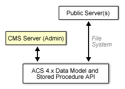

Documents of interest to site administrators (an installation guide, for example) should be included here.
This document describes how to install the Content Management System in conjunction with ACS 4.x.

CMS is essentially an administrative interface built on the ACS 4.x data model and stored procedure API. You must download and install ACS 4.x prior to installing CMS. The ACS 4.x documentation includes an excellent guide to the entire process of configuring Oracle and AOLserver in addition to installing ACS itself.CMS depends on a variety of core ACS packages, which are included in the standard ACS 4.x distribution.
CMS is typically deployed in conjunction with a public web service built on ACS. CMS can either run on the public web server or on a dedicated server, using either a separate domain name or port number from the public server. The production staff uses CMS to create, manage and deploy content for the public web service. In either scenario, the public server(s) access the published content in one of two ways:
SQL and the Content Repository API. Provided your public servers have access to the same database schema as CMS, you can use SQL queries in conjunction with the Content Repository API to access content objects and attributes dynamically on a per-request basis.
Publish to File System. CMS can merge published content with a template chosen by the publisher and write the output to the file system. The output files may be static HTML, or may themselves have dynamic includes appropriate for your public web server(s) (i.e. ADP, PHP, JSP, ASP, SSI, etc.).
Note that although you must install ACS 4.x for CMS, you are not required to use ACS 4.x as part of your public server architecture. If you choose to publish all content to the file system, a connection between your public web server(s) and the database is likewise optional.
The latest release of CMS is always available from the CMS download page or from the ArsDigita download page.
The Arsdigita Package Manager takes care of all the nitty-gritty details of installing a package such as CMS. After you have installed ACS 4.x, it is available at /acs-admin/apm/ on your server.
After installation, you need to mount CMS using the ACS' site map. It is available on your server at /admin/site-map. CMS uses a few parameters which you can modify from the same page once you have mounted it.
Last revised: $Id$